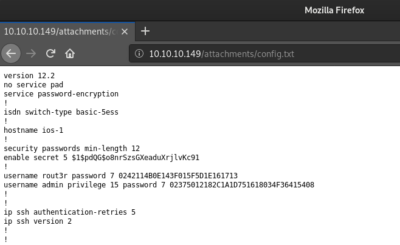

# Password Cracking - Cisco
A Cisco
config.txt file will usually contain passwords.
https://www.dummies.com/programming/networking/cisco/cisco-router-passwords-enable-and-secret/Several types of passwords can be configured on a Cisco router, like for Telnet and SSH connections
When you configure a secret password, that password is used to switch from User Exec mode to Priv Exec mode.
(think this is referring to privilege escalation whilst in a cisco terminal)
## Crack 'secret'
The 'secret' value in the image above is
$1$pdQG$o8nrSzsGXeaduXrjlvKc91### john
The secret entry -
$1$pdQG$o8nrSzsGXeaduXrjlvKc91 can be cracked using
john.
echo the hash into a file and run
john with
rockyou.txt as the wordlist.
root@gotham:~/ctf/heist# echo "$1$pdQG$o8nrSzsGXeaduXrjlvKc91" > cisco.hash
root@gotham:~/ctf/heist# john --wordlist=/usr/share/wordlists/rockyou.txt cisco.hash
Using default input encoding: UTF-8
Loaded 1 password hash (md5crypt, crypt(3) $1$ [MD5 32/32])
Will run 2 OpenMP threads
Press 'q' or Ctrl-C to abort, almost any other key for status
0g 0:00:00:10 0.82% (ETA: 02:44:06) 0g/s 13989p/s 13989c/s 13989C/s h0rses..frogs07
0g 0:00:00:17 1.46% (ETA: 02:43:12) 0g/s 14484p/s 14484c/s 14484C/s copper6..cinnomon
0g 0:00:02:19 12.06% (ETA: 02:43:03) 0g/s 13673p/s 13673c/s 13673C/s coco0406..coca1998
0g 0:00:03:37 20.12% (ETA: 02:41:49) 0g/s 14156p/s 14156c/s 14156C/s trampil..tramazi
stealth1agent (?)
1g 0:00:04:05 DONE
•
$1$pdQG$o8nrSzsGXeaduXrjlvKc91 =
stealth1agent## Crack User Passwords
The cisco user passwords are trivial to crack, just input the hashes here:
http://www.ifm.net.nz/cookbooks/passwordcracker.html• username
rout3r password 7
$uperP@ssword• username
admin privilege 15 password 7
Q4)sJu\Y8qz*A3?d